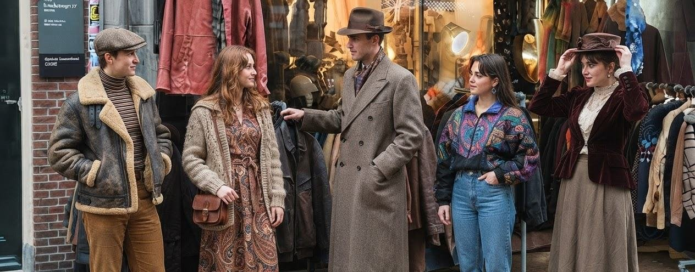
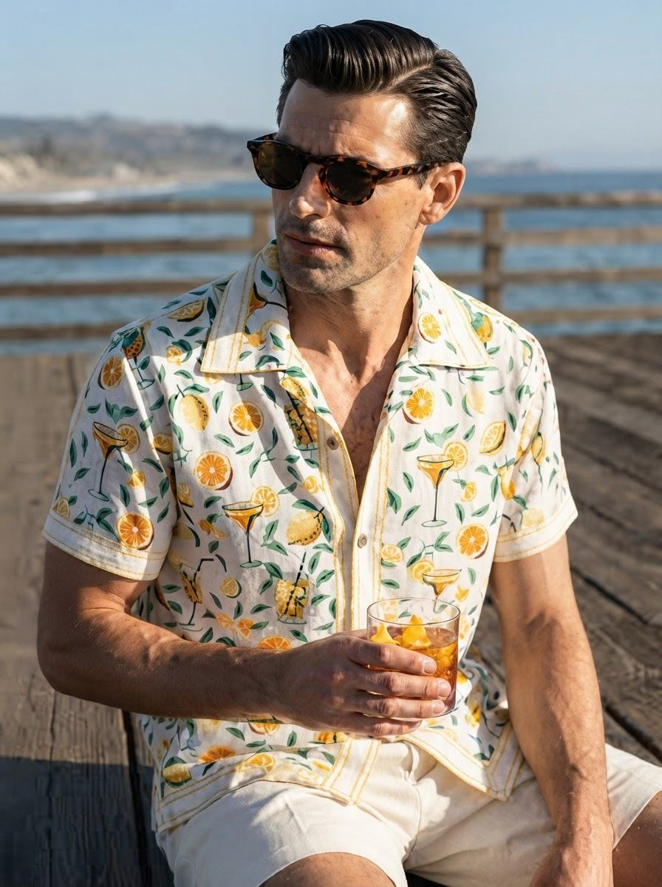
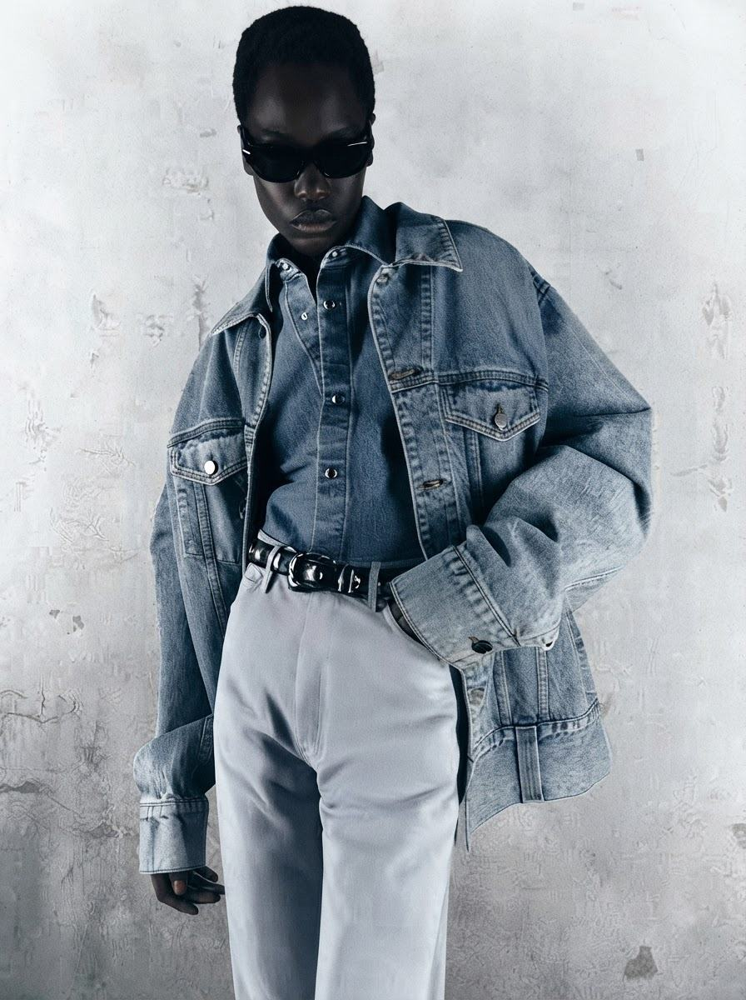
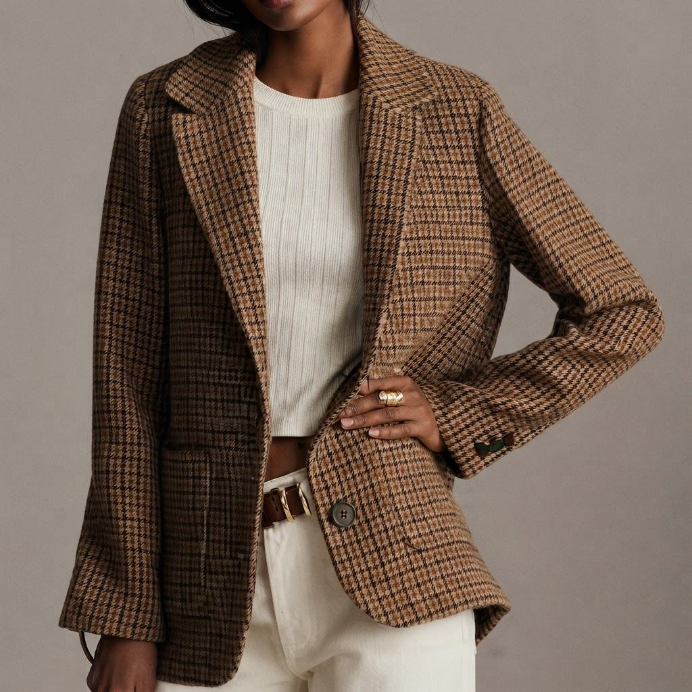
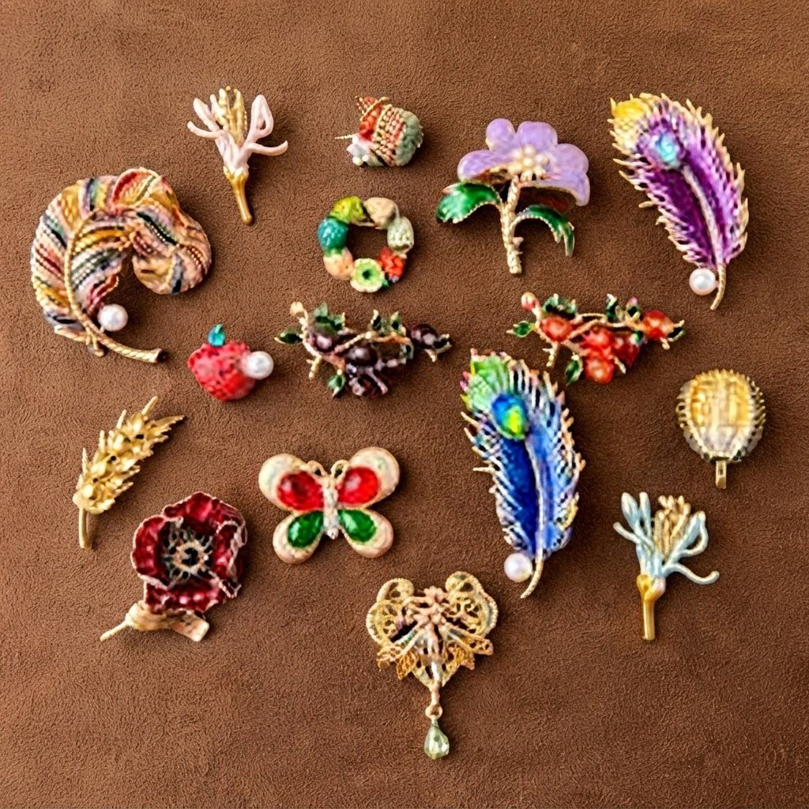
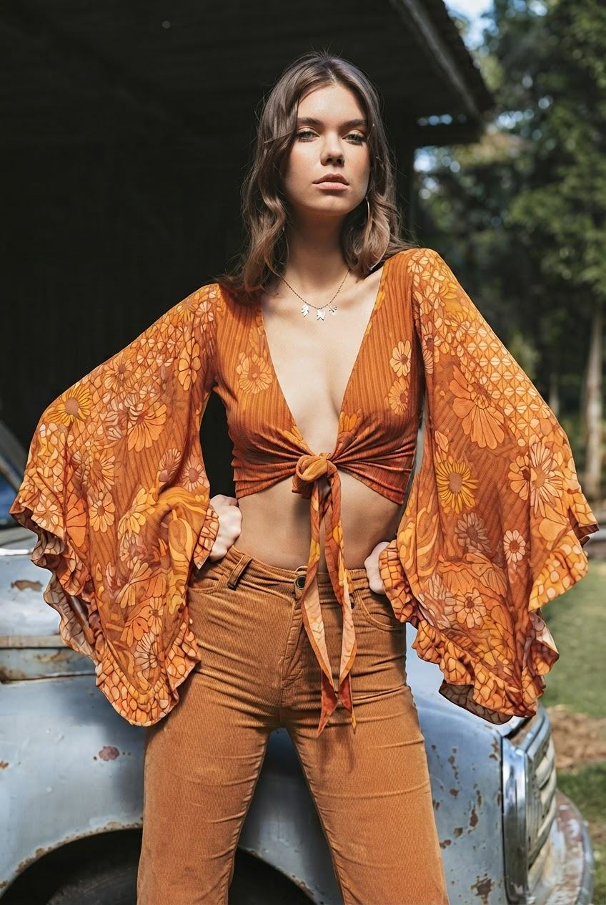
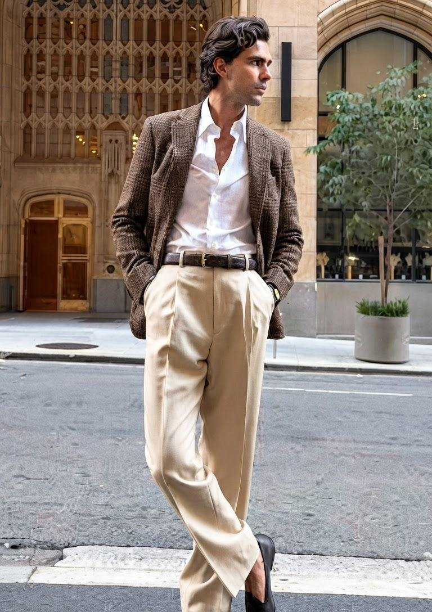

Vintage style
Vintage style haalt inspiratie uit mode uit het verleden en geeft oude kleding een nieuwe look.
Vintage style haalt inspiratie uit mode uit het verleden en geeft oude kleding een nieuwe look.

Vintage style is geïnspireerd op mode uit het verleden en geeft klassieke kleding een nieuwe uitstraling. Denk aan denim, leren jassen, retro prints, blouses en opvallende accessoires.
Vintage style kenmerkt zich door tijdloze kleding, karaktervolle details en invloeden uit verschillende modeperiodes. Door verschillende stijlen en materialen te combineren, ontstaat een look die uniek en persoonlijk aanvoelt.
De stijl draait om karakter, unieke items en tijdloze details. Je kunt vintage kleding volledig in retrostijl dragen, maar ook combineren met moderne basics voor een persoonlijke en eigentijdse outfit.





